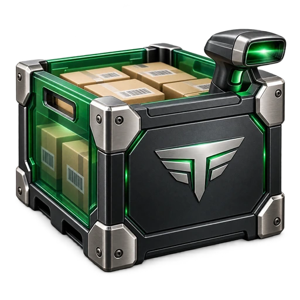
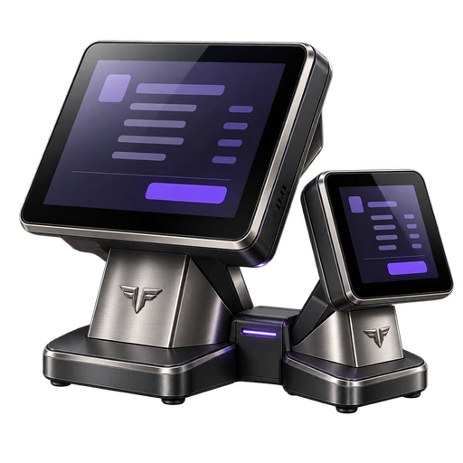
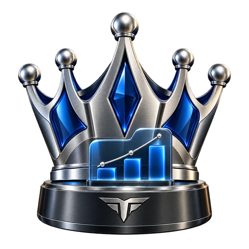
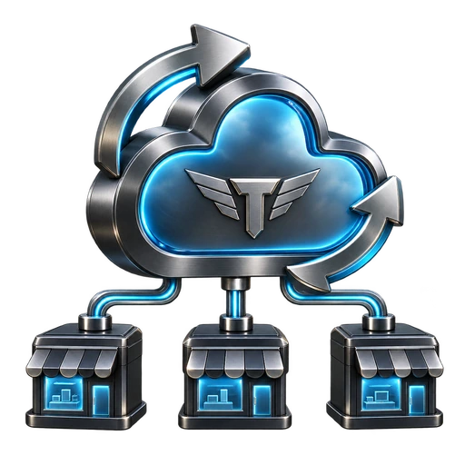

Centro de aprendizaje
Todo para empezar.
Todo para seguir.
Configura tus aplicaciones, conecta los equipos y conoce las tareas de cada día.
Tenkai POS
31 temas de uso y configuración

Tenkai Inventory
12 temas de uso y configuración

Tenkai MultiPos
10 temas de uso y configuración
Tenkai Resguardo
10 temas de uso y configuración

Tenkai Boss
11 temas de uso y configuración

Tenkai Sync
8 temas de uso y configuración
Recorridos completos